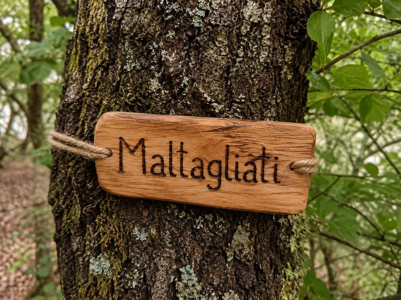
Cartellino col tuo nome
Inciso a pirografo e fissato all’albero che hai adottato. Valido per 1 anno — rinnovabile.
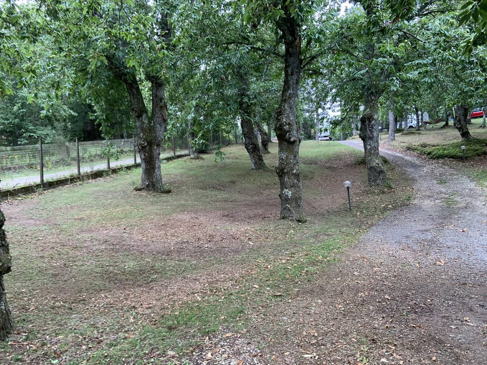
Venticinque secoli di tradizione rischiano di scomparire sotto l'avanzata incontrollata delle specie infestanti e l'abbandono totale del territorio.
Da anni interi versanti sono soffocati da acacie, rovi e spine: castagneti un tempo curati oggi non sono nemmeno più accessibili. Non è un problema di ieri — è un degrado che avanza da anni, in silenzio.
Sotto quel groviglio dormono castagni secolari, e con loro secoli di lavoro contadino che nessuno raccoglie più. Lasciare tutto così è un peccato mortale: si vanifica un patrimonio costruito in secoli, capace di dare una materia prima d’eccellenza.
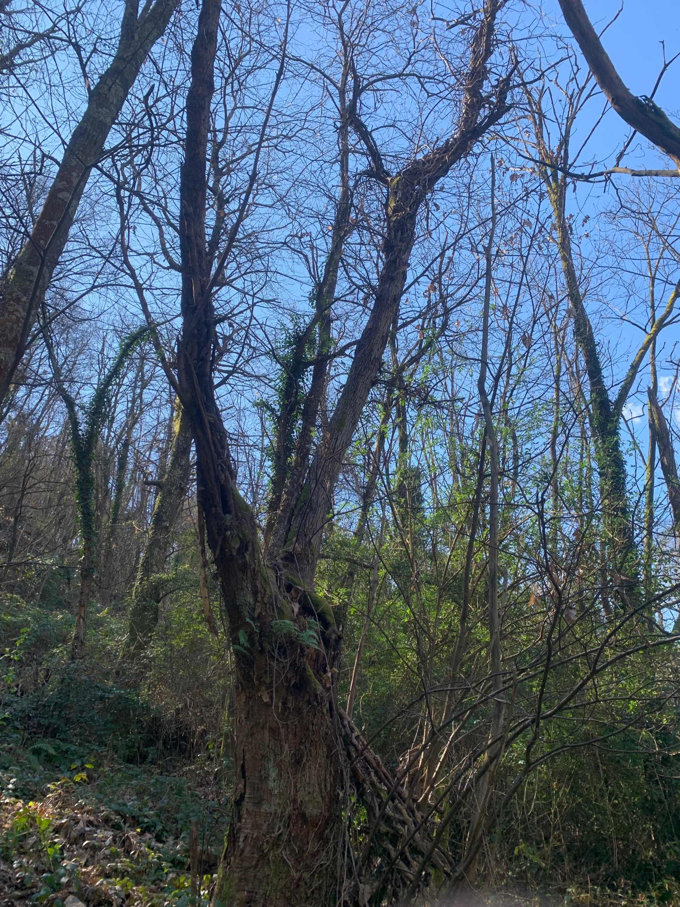
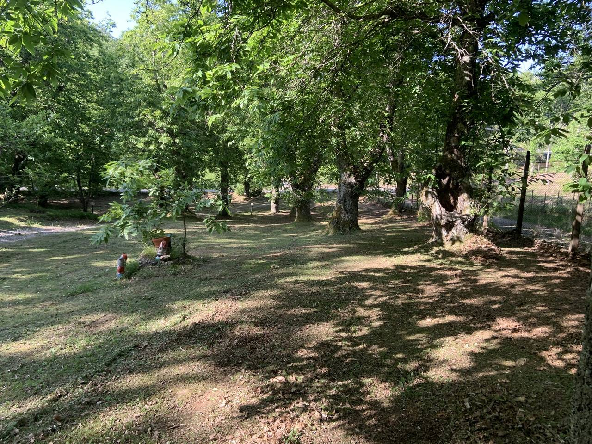
Recuperare un’area non dà frutti subito. Prima servono anni di lavoro e denaro, senza raccogliere nulla: è fatica pura, un investimento fatto oggi per un bosco che tornerà a vivere domani.
Alberi lasciati crescere per decenni vanno riportati in forma, un ramo alla volta, con rispetto per la loro età.
Liberare il sottobosco dalle infestanti che soffocano i castagni e rendono i boschi impenetrabili.
Le terrazze di pietra che reggono la montagna vanno ricostruite a mano, pietra su pietra, come un tempo.
Senza protezione i cinghiali distruggono il raccolto prima ancora che maturi: recintare è indispensabile.
Sui castagni recuperati si innestano varietà pregiate; e le piante selvatiche nate nel tempo vengono riportate a frutto.
Servono 15.000 € per recuperare il primo lotto: le particelle catastali 38, 43, 44, 23 e quelle concesse dai vicini (22, 40, 41). Pulizia, potature, ripristino dei muretti, ripianta dei castagni morti.
Ma il nostro sogno è molto più grande: restituire vita all’intera Svizzera Pesciatina, ettaro dopo ettaro. Cerchiamo persone che credano in questo — ogni nuovo lotto è un nuovo pezzo di territorio strappato all’abbandono.
Adotta un castagno e vieni a vederlo di persona, oppure sostienici con una donazione libera dell’importo che preferisci.
Abbiamo diviso i 15.000 € del primo lotto in obiettivi concreti: ecco dove siamo e cosa sblocca la tua donazione.
Questo primo lotto è un esperimento concreto. Ma il territorio della Svizzera Pesciatina ha centinaia di ettari di castagneti abbandonati che aspettano. Boschi che, con le mani giuste e una comunità che ci crede, possono tornare a respirare.
Ogni euro raccolto in eccesso, ogni nuovo padrino, ogni persona che decide di credere in questo progetto ci permette di estendere il recupero a un altro lotto, a un altro castagneto, a un altro pezzo di Appennino.

Il territorio
Centinaia di ettari di castagneti storici da ripristinare nei comuni di Pescia, Vellano, Pontito, Stiappa.
Particelle catastali oggetto dell’intervento, con i confini in rosso mattone. Vista invernale 2023 — fonte: Geoscopio Regione Toscana.
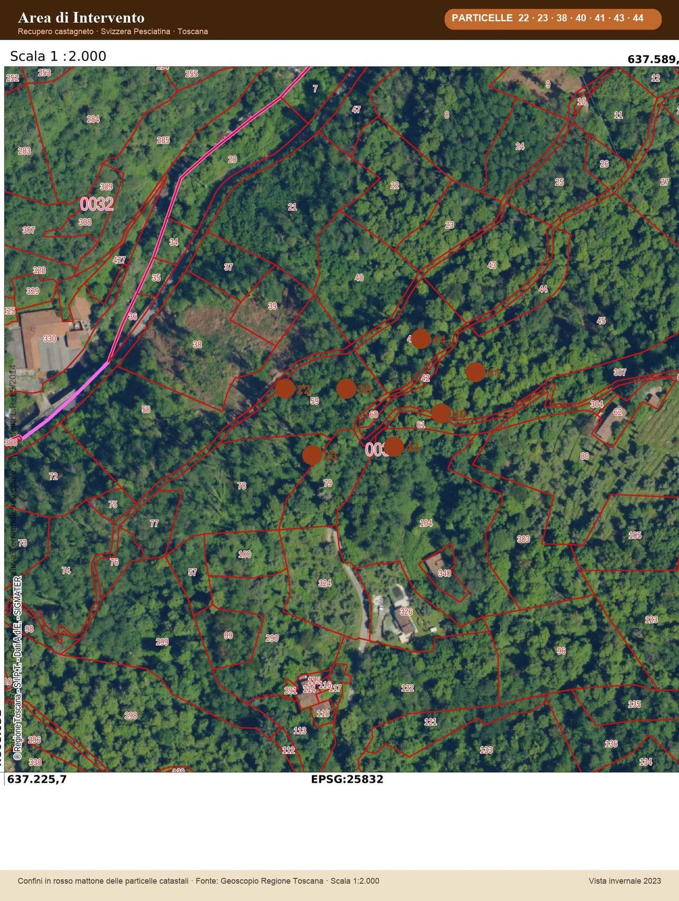
Stiamo preparando l\'ortofoto da Geoscopio Regione Toscana con i confini in rosso mattone delle particelle 38, 43, 44, 23 e di quelle concesse dai vicini (22, 40, 41).
Non è una donazione anonima. È un’esperienza che ti lega per sempre a un albero, alla sua storia, e alla nostra famiglia.

Inciso a pirografo e fissato all’albero che hai adottato. Valido per 1 anno — rinnovabile.
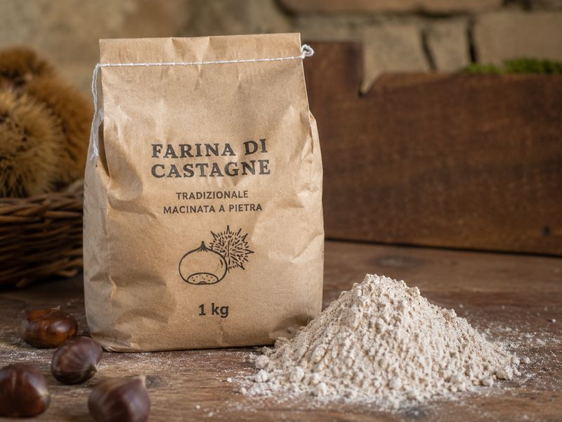
Farina di castagne tradizionale macinata a pietra nel nostro mulino.
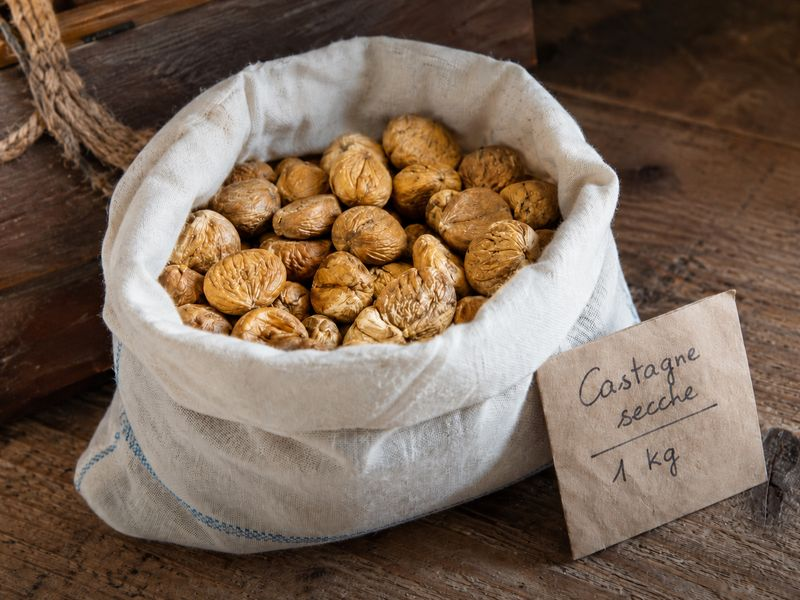
Essiccate per 40 giorni nel metato. Da tenere a dispensa per zuppe e dolci: una riserva di sapore per tutto l’inverno.
Ti accompagniamo nel bosco, al metato e al mulino, e ti accogliamo a tavola con una degustazione "povera" ma autentica: necci, castagnaccio, panzanella, un bicchiere di vino e un sorso di acqua di fonte. Niente menu studiato, solo quello che il bosco e la stagione ci danno.
Oppure aiutaci con una donazione libera dell’importo che preferisci.
Dal bosco al metato, dalla macina all’insacco: ogni fase è fatta a mano, con la cura di una volta. Questo è il lavoro che la tua donazione sostiene.
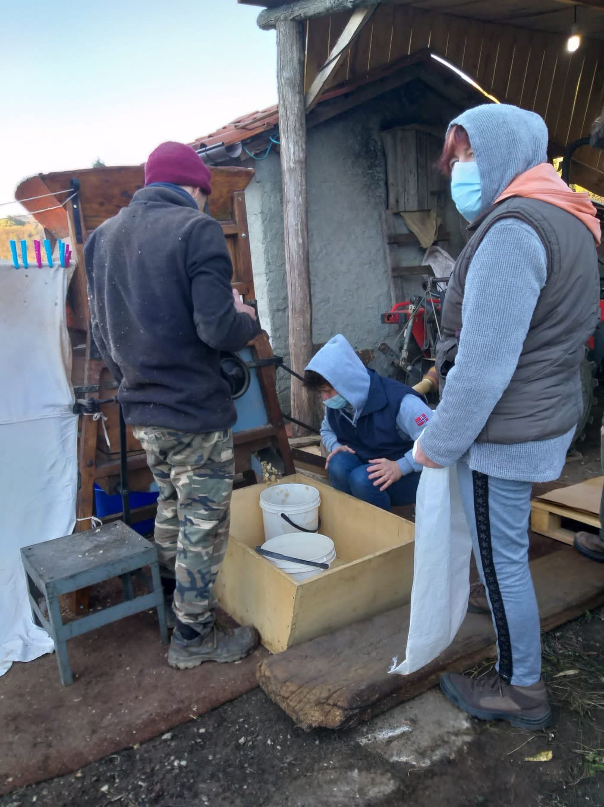


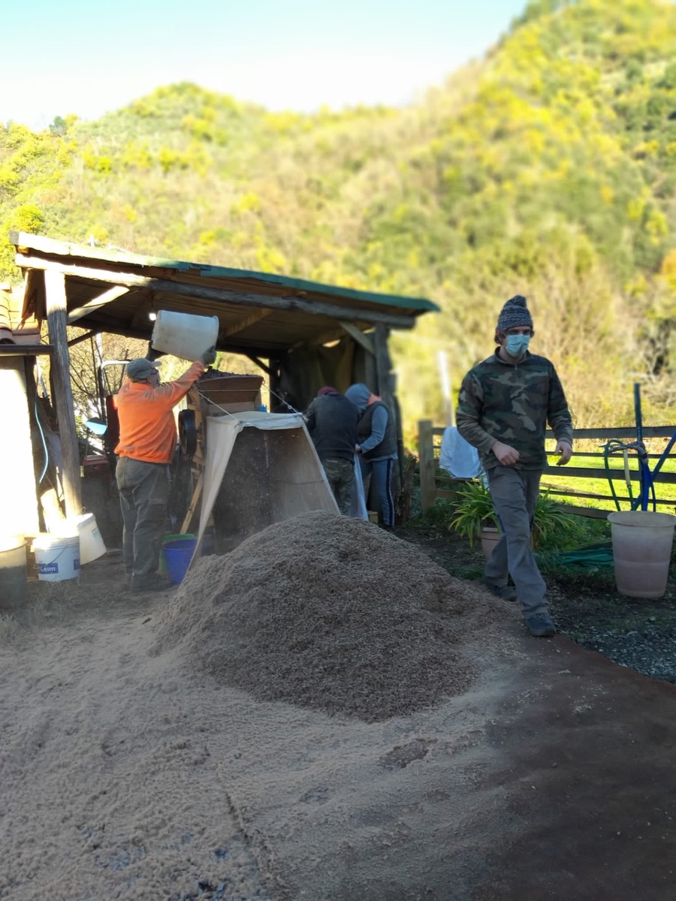
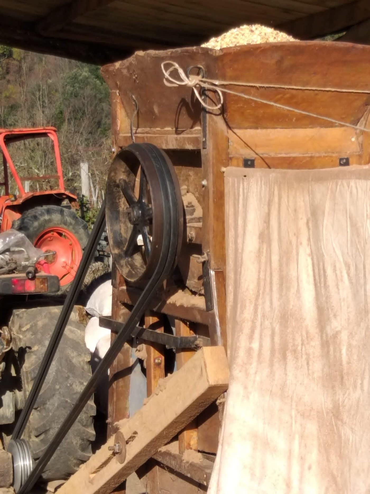


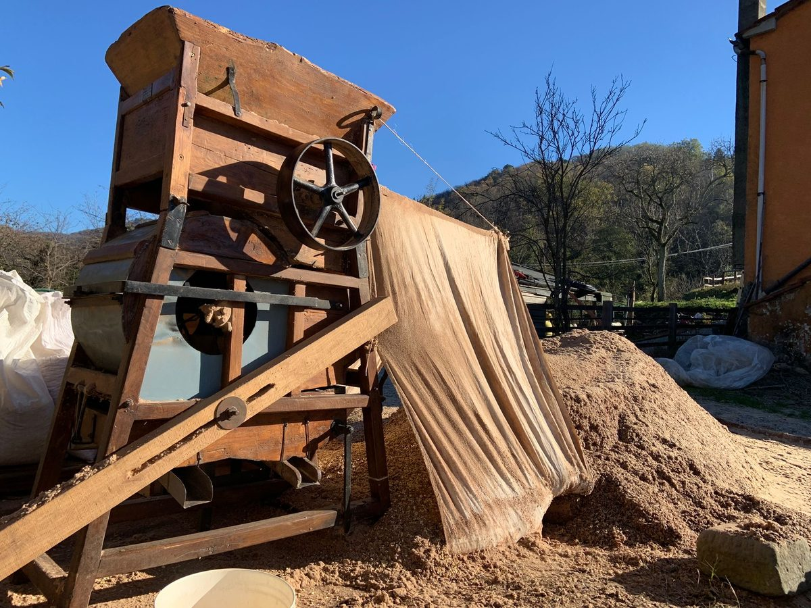
Nel cuore della nostra tenuta, un ecosistema unico sta soffocando. 20 castagni secolari, giganti buoni che hanno nutrito generazioni, sono oggi sommersi dalle acacie e dall'edera infestante.
Questi alberi monumentali hanno bisogno di un intervento immediato di pulizia, potatura conservativa e messa in sicurezza del terreno. Senza cure, entro i prossimi 3 anni, il soffocamento radicale e la mancanza di luce segneranno la fine di questa eredità.
"Il castagno non è solo un albero, è un monumento vivente che parla della nostra resilienza."
su 15.000 € — raccolti finora
Ogni centesimo è destinato esclusivamente al lavoro dei tecnici forestali e agronomi.
Recuperare questi 5.000mq significa ripristinare l'habitat naturale per le api locali e la fauna del sottobosco.
Un'area di 5.000 mq di castagneto storico visibile dall'alto, il cuore pulsante del nostro intervento.
Attraverso la "Donazione Libera", diventerai parte del nostro diario di bordo. Riceverai aggiornamenti mensili, video dei droni che monitorano i lavori e il certificato digitale di custode della terra.
Aiutaci con una donazionefavoriteUn impegno concreto per chi vuole un legame indissolubile con la natura.
Il pacchetto del padrino
Disponibilità limitata a soli 50 esemplari.
"Curare un castagno non è solo agricoltura, è un atto di fede nel futuro. Chi pianta castagni oggi, pensa alle generazioni che verranno tra cento anni."— Nonno Nanne
Siamo nella Svizzera Pesciatina · Pescia · Pistoia · Toscana
Collaborazioni
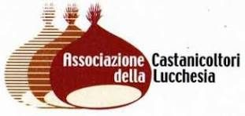
Collaboriamo con le realtà che tutelano la castanicoltura del territorio.